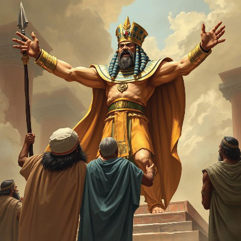

Form Two
Tanzania Institute of Education (TIE)


Bible Knowledge
18

Figure 1. 5: Pharaoh chasing away Moses
The Passover feast
The Passover feast was established as a memorial of liberation from slavery in
Egypt. The Passover feast explains how God passed over the houses of the Israelites, sprinkled with blood as he struck the first born of Egyptians. Furthermore, at this point the passive obedience that the children of Israel have shown is now moved to a level of active obedience. They are given strict instructions to follow so that they do not also feel the judgment of this last plague sent by the Lord. These instructions are known as: The Feast of Passover, the Feast of Unleavened Bread, and the Law of the Firstborn. The Lord told Moses “This month shall be for you a beginning of months; it shall be the first month of the year for you…” (Exodus 12:2). The
Israelites were told to prepare a paschal lamb.
The Paschal Lamb
The Lord commanded the Israelites through Moses to prepare a Paschal lamb with the following qualities: A male from a sheep or goat, one-year-old and without blemish. The Paschal lamb shall be slaughtered in the evening of the 14th day of the month (Nissan). Some of the blood to be put on the two doors’ posts and the lintel of the houses which they shall eat. The meat to be eaten at night should be roasted. The lamb was to be eaten with unleavened bread and bitter herbs. Nothing to be kept till the morning. They shall eat with loans gilded, sandals on the feet, staff on hand and shall be eaten in haste.